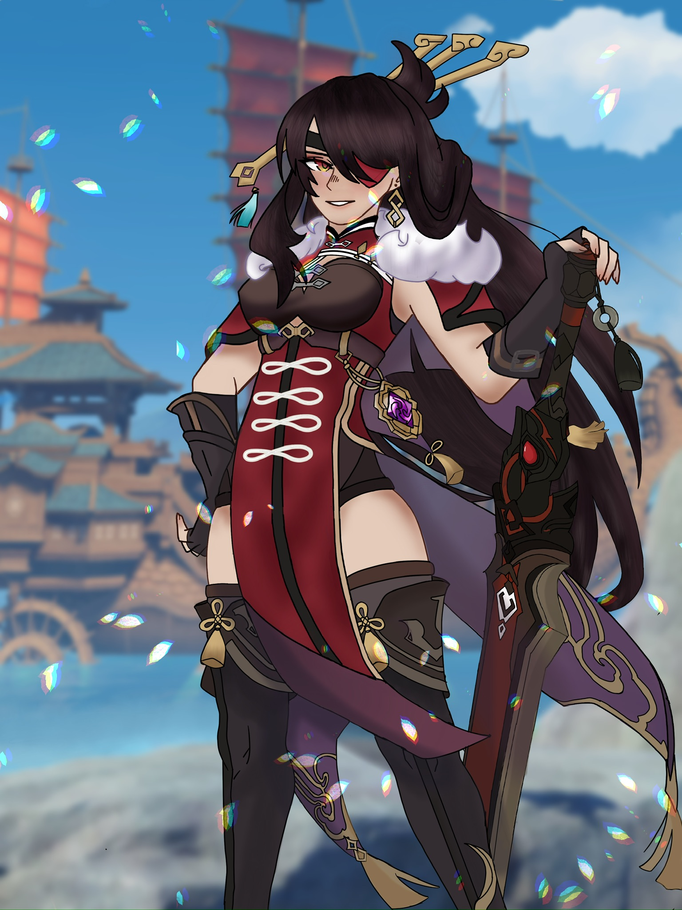

ART SPECIFICALLY DRAWING
Is the skill of creating pictures by using shapes, lines, and color. It requires both imagination and practice.
Drawing allows you to communicate your thoughts and emotions. It's using only visuals to describe something instead of words. You will become more adept at putting what you see and envisage on paper or the computer screen as you continue to practice.
Even though i normally don't use color in my drawings.
Commissions
Beidou 2024 made digital. (Commission)
Besides drawing in my own time, i am available to do commissions for price that can be negotiated. Please understand that the time in which i finish a commission can vary on what you ask for and the difficulty. To look at examples of commissions .